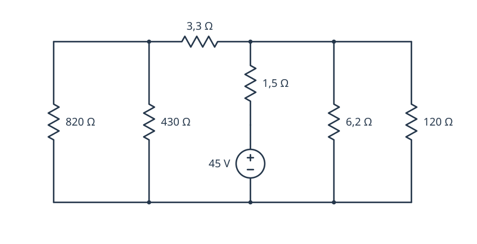

0221 · Montaje y mantenimiento de equipo · Tema 1
Boletín 1 · Serie, paralelo y mixto
Boletín 1 · Serie, paralelo y mixto
Circuitos redibujados del boletín del curso 2023/24. Resuélvelos con la Ley de Ohm.
En esta web se numeran del 1 al 10: el PDF original repite el número 4. Por eso, el ejercicio 10 de aquí corresponde al ejercicio 9 del PDF.
1. ¿Cuánta corriente produce la fuente a través de la resistencia?
2. ¿Qué valor debe tener la resistencia para que la corriente sea de 3 A?
3. ¿Qué valor debe tener la fuente para que la corriente sea de 1 A con una resistencia de 100 Ω?
4. Calcula la corriente total.
5. Calcula la corriente provocada por las dos fuentes colocadas en serie.
6. Calcula el valor de la resistencia para que la corriente sea de 2,5 A.
7. Calcula la corriente que circula por el circuito.
8. Calcula la corriente que circula por el circuito (resistencias en paralelo).
9. Calcula el voltaje de la fuente para que exista una corriente de 6 A.
La fuente se ha desplazado a la izquierda para facilitar la lectura. Conserva las mismas conexiones: las cinco resistencias están en paralelo entre sus dos terminales. Los 6 A son la intensidad total.
10. Calcula la corriente suministrada por la fuente de 45 V.
Ejercicio 9 del PDF original. Identifica los nodos antes de decidir qué resistencias están en serie y cuáles en paralelo.
